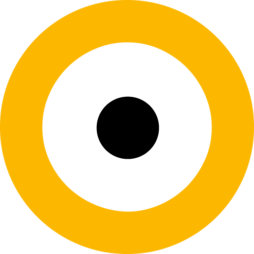
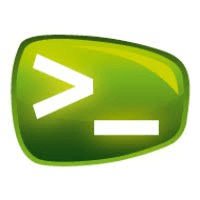

Formación
Master en Data Analytics
Formación en análisis de datos a lo largo de todo el ciclo: obtención, limpieza, visualización y comunicación de insights.
Experiencia en Python (Pandas, NumPy, Sklearn).
Gestión de bases de datos usando herramientas como BigQuery en Google Cloud.
Desarrollo de dashboards y visualizaciones interactivas en Power BI.
Conocimientos en marketing, fundamentos de IA y métodos básicos de Machine Learning aplicados al análisis de datos.
Nuclio Digital School

CFGS en Desarrollo de aplicaciones Multiplataforma
Formación en el desarrollo de aplicaciones, incluyendo análisis, diseño e implementación.
Experiencia en Java, C# y C++, aplicando principios de programación orientada a objetos para crear código reutilizable y mantenible.
Gestión y conectividad de bases de datos usando SQL, MySQL y Java Database Connectivity (JDBC).
Desarrollo de interfaces web y front-end con HTML, CSS y XML.
Familiaridad con buenas prácticas de ingeniería de software, incluyendo control de versiones con Git, pruebas con JUnit y metodologías Agile para gestión de proyectos.
Experiencia en creación de aplicaciones móviles y conocimiento de UML para modelado y diseño de software.
Institut Caparrella
CFGM en Instalacion de Telecomunicaciones
Formación en instalación de telecomunicaciones e informática, incluyendo instalación de sistemas eléctricos y de telecomunicaciones.
Experiencia práctica con herramientas y resolución de problemas técnicos.
Desarrollo de precisión y atención a la seguridad en cada instalación.
Conocimiento de normativas y estándares aplicables en telecomunicaciones.
Institut Caparrella
Experiencias laborales
Maestro de programación
Formación a niños en fundamentos de programación
Aprendi a explicar conceptos de programación de forma sencilla y práctica.
Diseño de actividades creativas y motivadoras.
Introduccion a lenguajes como Logo, Python, Java y C++ adaptados a edades tempranas.
Mejore mis habilidades pedagógicas y de comunicación con niños.
Adaptar la enseñanza según el progreso de cada alumno.
....Codelearn....
